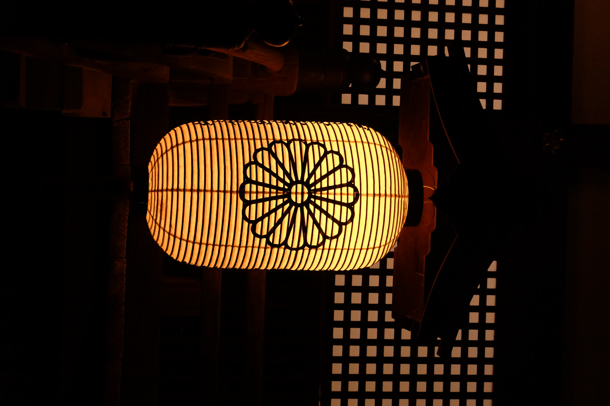

Loom1
A reclaimed glass jug fused with a lattice-printed shade. Warm dimmable glow, solid oak foot, fully rewired & certified.
Handcrafted · Upcycled · Space-Age
Loomilamps merges precision 3D-printing with rescued, everyday objects to create one-of-a-kind lamps — playful relics from a retro-futuristic tomorrow that never quite arrived. Every piece is hand-finished, numbered, and built to glow for decades.
Shop the CollectionThe Collection
Every lamp starts as something else — a jug, a colander, a forgotten toy — before it's rebuilt with 3D-printed armatures and rewired by hand.

A reclaimed glass jug fused with a lattice-printed shade. Warm dimmable glow, solid oak foot, fully rewired & certified.
Built from a vintage colander, orbited by a printed halo diffuser. Next drop, limited to 30 pieces.
A thermos shell reborn as a warm bedside beacon. Currently in prototyping — sketches dropping soon.
Our Philosophy
Loomilamps was born from a simple obsession: objects shouldn't die when their first life ends. We rescue jugs, colanders, thermoses and forgotten plastics from flea markets and attics, then give them a second purpose through the precision of modern 3D-printing.
Every armature, socket housing and diffuser is designed digitally and printed layer by layer — a space-age process wrapped around a very human, very imperfect found object. The result is pop, tactile, and warm: lighting that feels like it travelled back from a retro-future that never quite happened.
No two lamps are identical. Each one carries the dents, patina and quirks of its past life, matched with the clean geometry of digital fabrication — proof that craft and technology glow brighter together.
Questions about a piece, a custom commission, or a stockist near you? Drop us a line and we'll get back within two days.